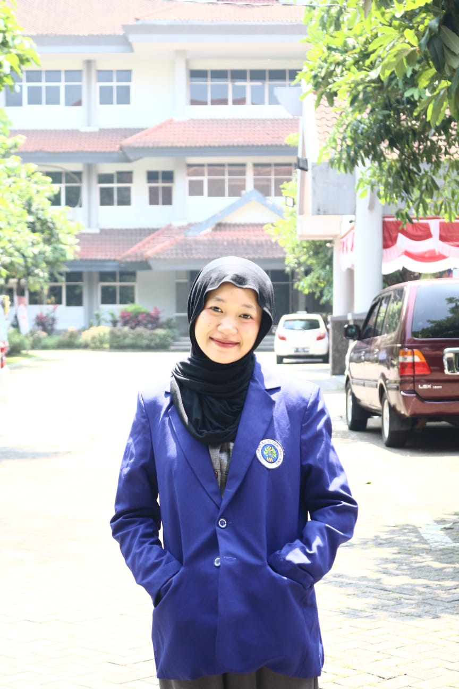

Kenalan dengan Pengembang ATOMIK
Website ATOMIK dikembangkan sebagai media belajar ikatan kimia yang interaktif, terarah, dan ramah bagi siswa. Pengembangan website ini didampingi oleh dosen pembimbing agar materi, alur, dan tampilan pembelajaran tetap sesuai dengan kebutuhan pembelajaran kimia.

Rusyda Ramadhani
Mahasiswa S1 Pendidikan Kimia yang mengembangkan website ATOMIK sebagai media pembelajaran interaktif pada materi ikatan kimia. Website ini dirancang untuk membantu siswa mempelajari konsep ikatan kimia melalui alur Learning Cycle-5E, tampilan visual yang menarik, serta aktivitas belajar yang lebih terarah dan mudah diikuti.
Dr. Munzil, M.Si
Dosen pembimbing berperan memberikan arahan, masukan, dan telaah dalam proses pengembangan website ATOMIK. Bimbingan yang diberikan mencakup kesesuaian materi kimia, kelayakan media pembelajaran, alur kegiatan berbasis Learning Cycle-5E, serta kualitas penyajian website agar lebih sesuai digunakan dalam proses pembelajaran.
Tentang Website ATOMIK
ATOMIK merupakan singkatan dari Aktivitas Terpandu Online untuk Memahami Ikatan Kimia. Website ini dirancang untuk membantu siswa mempelajari materi ikatan kimia melalui alur Learning Cycle-5E, yaitu Engagement, Exploration, Explanation, Elaboration, dan Evaluation. Setiap materi dilengkapi bacaan, aktivitas, pertanyaan terarah, evaluasi berbasis stimulus, serta umpan balik pembelajaran agar siswa dapat membangun pemahaman secara bertahap.